Profilométrie de faisceau laser : mesurer la taille du faisceau le long de l’axe de propagation#
Cet exemple montre comment mesurer la taille d’un faisceau laser le long de l’axe de propagation en utilisant DataLab :
Ouvrir toutes les images d’un dossier
Appliquer un seuillage aux images
Extraire le profil d’intensité le long d’une ligne horizontale
Ajuster le profil d’intensité à une fonction gaussienne
Calculer la largeur à mi-hauteur (FWHM) du profil d’intensité
Essayer une autre méthode : extraire le profil d’intensité radial
Calculer la FWHM du profil d’intensité radial
Effectuer la même analyse sur une pile d’images et sur les profils résultants
Tracer la taille du faisceau en fonction de la position le long de l’axe de propagation
Charger les images#
Note
Les images utilisées dans ce tutoriel « TEM00_z_*.jpg » sont disponibles dans le dossier de données du tutoriel du répertoire d’installation de DataLab (<Répertoire d'installation de DataLab>/data/tutorials/).
Alternativement, vous pouvez les télécharger depuis ici et les extraire dans le dossier de votre choix.
Tout d’abord, nous ouvrons DataLab et chargeons les images. Lorsque vous travaillez avec plusieurs images, l’approche la plus efficace consiste à utiliser l’option « Ouvrir depuis un répertoire… » du menu « Fichier » (ou cliquer sur le bouton  dans la barre d’outils). Cette fonction charge toutes les images d’un répertoire sélectionné en une seule fois.
dans la barre d’outils). Cette fonction charge toutes les images d’un répertoire sélectionné en une seule fois.
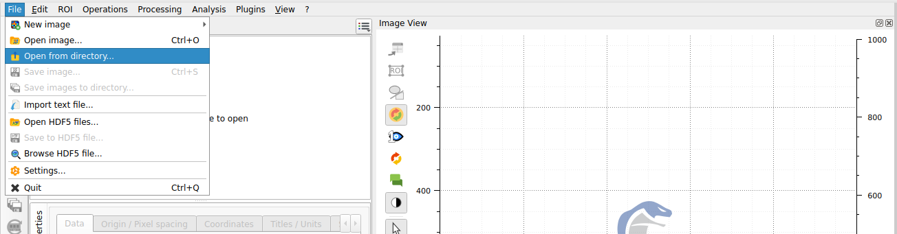
Le menu « Fichier > Ouvrir une image… »#
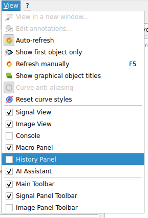
Sélectionnez le dossier contenant les images et cliquez sur « Choisir ».#
Les images sont maintenant chargées dans le panneau « Images ». Vous pouvez zoomer en cliquant avec le bouton droit et en faisant glisser la souris verticalement. Pour déplacer l’image, utilisez le bouton du milieu de la souris tout en faisant glisser.

Zoomer avec le bouton droit de la souris. Déplacer l’image avec le bouton du milieu de la souris.#
Note
Pour voir plusieurs images simultanément, sélectionnez le groupe d’images et choisissez « Afficher les images côte à côte » dans le menu « Affichage ».

Affichage des images côte à côte.#
Avertissement
Le menu « Traitement > Géométrie » inclut une option « Distribuer sur une grille »  . Cette fonction repositionne les images en appliquant des décalages à leurs coordonnées X et Y, les organisant dans une disposition en grille pour une visualisation côte à côte. Notez que cette opération modifie les coordonnées de l’image.
. Cette fonction repositionne les images en appliquant des décalages à leurs coordonnées X et Y, les organisant dans une disposition en grille pour une visualisation côte à côte. Notez que cette opération modifie les coordonnées de l’image.

Images distribuées sur une grille de 4 colonnes.
Pour restaurer les positions d’image d’origine, utilisez l’option « Réinitialiser les positions des images »  du menu « Traitement > Géométrie ». Notez que cette opération définit toutes les origines d’image pour qu’elles correspondent à l’origine de la première image, ce qui signifie que toutes les différences initiales dans les origines d’image seront perdues.
du menu « Traitement > Géométrie ». Notez que cette opération définit toutes les origines d’image pour qu’elles correspondent à l’origine de la première image, ce qui signifie que toutes les différences initiales dans les origines d’image seront perdues.
Supprimer le bruit de fond#
Lorsque nous sélectionnons l’une des images, nous remarquons la présence de bruit de fond, ce qui rend utile l’application d’un seuillage aux images. Plusieurs méthodes sont disponibles pour estimer le niveau de bruit de fond.
Une approche utilise l’outil « Profil rectiligne », qui est fourni par la bibliothèque PlotPy <https://github.com/PlotPyStack/plotpy> que DataLab utilise pour la visualisation de signaux et d’images. Sélectionnez une image dans le panneau « Images », choisissez l’image correspondante dans le panneau de visualisation, et activez l’outil « Profil rectiligne »  depuis la barre d’outils verticale sur le côté gauche du panneau de visualisation. Cela révèle que le niveau de bruit de fond est d’environ 30 lsb.
depuis la barre d’outils verticale sur le côté gauche du panneau de visualisation. Cela révèle que le niveau de bruit de fond est d’environ 30 lsb.
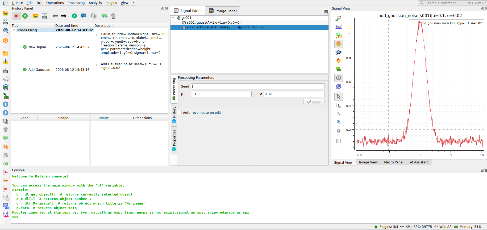
Une image du panneau « Images ». Pour afficher le marqueur de courbe, sélectionnez la courbe de profil et cliquez avec le bouton droit pour ouvrir le menu contextuel, puis choisissez « Marqueurs > Lié à l’élément actif ».#
Une autre méthode pour mesurer le bruit de fond, également fournie par PlotPy <https://github.com/PlotPyStack/plotpy>, consiste à utiliser l’outil « Statistiques de l’image »  de la barre d’outils verticale sur le côté gauche du panneau de visualisation. Cet outil affiche des informations statistiques pour une région rectangulaire que vous définissez en faisant glisser la souris sur l’image. Cette analyse confirme que le niveau de bruit de fond est d’environ 30 lsb.
de la barre d’outils verticale sur le côté gauche du panneau de visualisation. Cet outil affiche des informations statistiques pour une région rectangulaire que vous définissez en faisant glisser la souris sur l’image. Cette analyse confirme que le niveau de bruit de fond est d’environ 30 lsb.
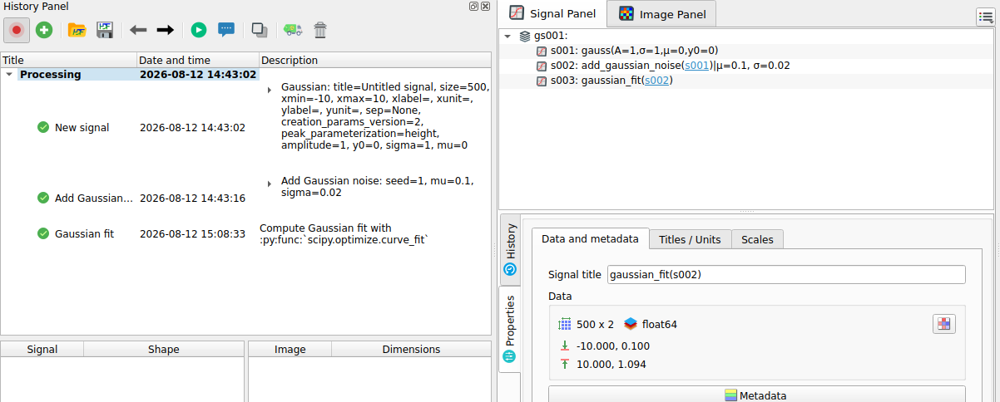
L’outil « Statistiques de l’image » dans la barre d’outils verticale.#
Notez que ces outils ne sont pas persistants : les résultats d’analyse disparaissent lorsque vous sélectionnez une autre image, ils sont destinés à fournir un aperçu rapide des données d’image.
Nous pouvons maintenant écrêter l’image à 35 lsb pour supprimer le bruit de fond en utilisant le menu « Traitement > Ajustement de niveau > Écrêtage… ».
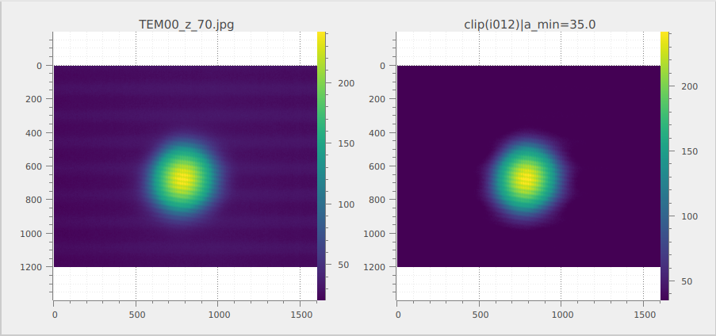
Les deux images d’origine et l’image écrêtée sont affichées côte à côte dans la « Vue Image » (en utilisant la fonction « Distribuer sur une grille » vue précédemment).#
Mesure de la taille du faisceau#
Nous pouvons maintenant calculer le centroïde du faisceau—c’est-à-dire la position de son centre de masse. Pour ce faire, sélectionnez « Analyse > Centroïde » dans le menu.

La position du centroïde est affichée sur l’image.#
Ensuite, nous pouvons extraire un profil de ligne le long de l’axe horizontal en utilisant « Opérations > Profils d’intensité > Profil rectiligne ». Définissez la position de la ligne sur la position du centroïde calculée précédemment (c’est-à-dire 668) en utilisant le bouton « Définir les paramètres ». Voir Analyse d’interférogrammes Fabry-Perot : détection d’anneaux et ajustement de cercles pour plus de détails sur l’extraction de profil d’intensité.
Le profil d’intensité sera affiché dans le panneau « Signaux ». Nous pouvons ensuite ajuster le profil à une fonction gaussienne en utilisant « Traitement > Ajustement > Ajustement gaussien ». Ici, nous avons sélectionné les deux signaux pour comparaison.

Le profil d’intensité ajusté à une fonction gaussienne. Ici, les deux signaux sont sélectionnés.#
Explorons maintenant une autre méthode pour calculer la FWHM. En revenant au signal de profil d’intensité, nous pouvons calculer directement la FWHM en utilisant « Analyse > Largeur à mi-hauteur ». Vous pouvez choisir la méthode d’estimation en fonction des caractéristiques de votre courbe et spécifier éventuellement l’intervalle à considérer pour ce calcul. Une fois terminé, la fenêtre de résultats affichera la valeur FWHM, qui est stockée dans les métadonnées et affichée sur la courbe.

La fenêtre contextuelle qui permet de choisir la méthode pour estimer la FWHM.#

Le résultat de la FWHM affiché dans la fenêtre contextuelle et sur la courbe.#
Essayons également une autre méthode pour mesurer la taille du faisceau en revenant à l’image.
Depuis le panneau « Images », nous pouvons extraire le profil d’intensité radial en utilisant « Opérations > Profils d’intensité > Profil radial ». Le profil d’intensité radial peut être calculé autour de la position du centroïde, du centre de l’image ou d’une position définie par l’utilisateur, selon vos données. Pour nos données, qui semblent avoir une symétrie radiale avec un centre pas nécessairement identique au centre de l’image, la meilleure option est la position du centroïde.
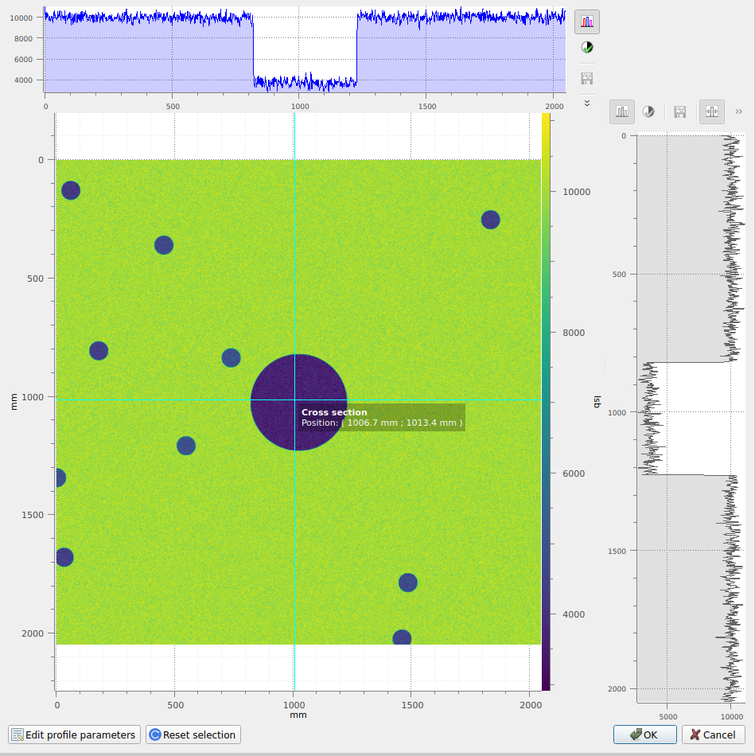
Les options disponibles pour le calcul du profil radial.#
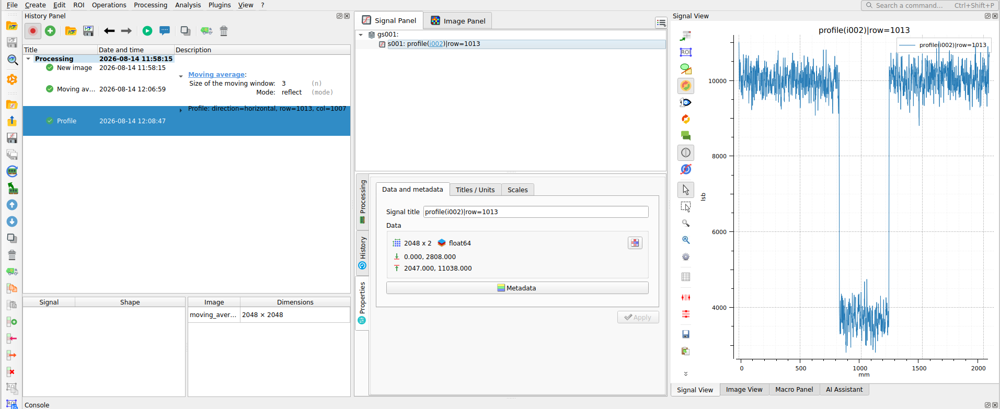
Le profil d’intensité radial affiché dans le panneau « Signaux ». Il est plus lisse que le profil de ligne, car il est calculé à partir d’un plus grand nombre de pixels, ce qui permet de moyenner le bruit.#
Appliquer ces opérations à toutes les images#
Toutes les opérations et calculs effectués sur une seule image peuvent être appliqués à toutes les images du panneau « Images ».
Pour commencer, nettoyez le panneau « Signaux » en utilisant « Édition > Tout supprimer » ou le bouton dans la barre d’outils. Supprimez également les résultats intermédiaires du panneau « Images » en sélectionnant les images créées lors du prototypage et en les supprimant individuellement en utilisant « Édition > Supprimer » ou le bouton  .
.
Ensuite, sélectionnez toutes les images dans le panneau « Images » (individuellement ou en sélectionnant l’ensemble du groupe « g001 »).
Appliquez l’opération d’écrêtage à toutes les images, puis extrayez les profils d’intensité radiaux pour toutes les images (après avoir sélectionné l’ensemble du groupe « g002 »—il devrait être automatiquement sélectionné si vous aviez « g001 » sélectionné avant d’appliquer le seuil).
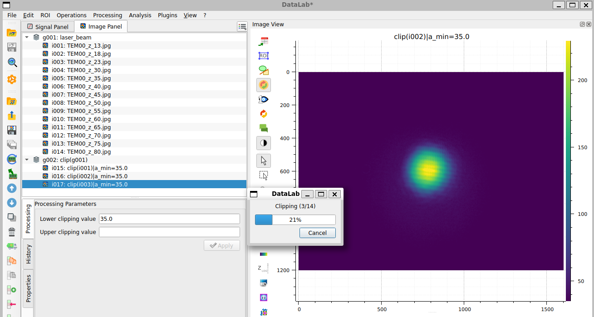
L’écrêtage s’applique à toutes les images du groupe.#

Le panneau « Signaux » contient maintenant tous les profils d’intensité radiaux.#
Nous pouvons maintenant calculer la FWHM pour tous les profils d’intensité radiaux. La boîte de dialogue « Résultats » affichera les valeurs FWHM pour tous les profils.
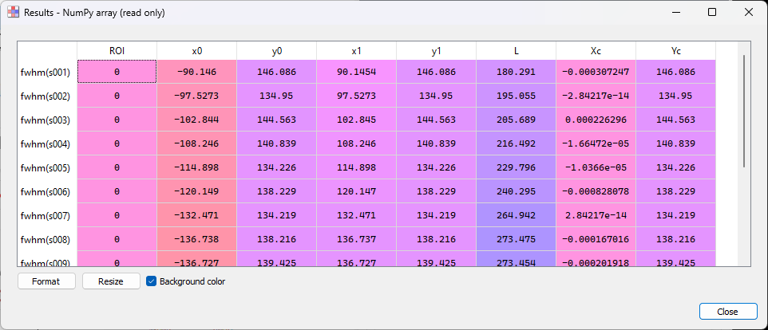
La boîte de dialogue « Résultats » affiche les valeurs FWHM pour tous les profils.#
Note
Pour afficher à nouveau les résultats d’analyse, sélectionnez « Afficher les résultats »  dans le menu « Analyse », ou cliquez sur le bouton « Afficher les résultats » en dessous de la liste des images :
dans le menu « Analyse », ou cliquez sur le bouton « Afficher les résultats » en dessous de la liste des images :

Enfin, nous pouvons tracer la taille du faisceau en fonction de la position le long de l’axe de propagation en utilisant la fonction « Tracer les résultats »  du menu « Analyse ». Cette fonction vous permet de tracer des ensembles de données de résultats en sélectionnant les axes x et y parmi les colonnes de résultats disponibles. Ici, nous allons tracer les valeurs FWHM (L) en fonction de l’index de l’image (Indices).
du menu « Analyse ». Cette fonction vous permet de tracer des ensembles de données de résultats en sélectionnant les axes x et y parmi les colonnes de résultats disponibles. Ici, nous allons tracer les valeurs FWHM (L) en fonction de l’index de l’image (Indices).
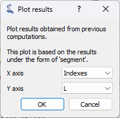
La fonction « Tracer les résultats » dans le menu « Analyse ».#

La taille du faisceau en fonction de la position le long de l’axe de propagation (la position est en unités arbitraires—l’index de l’image).#
Nous pouvons également étalonner les axes X et Y en utilisant « Traitement > Étalonnage linéaire ». Ici, nous définissons l’axe X sur la position en mm (en entrant le titre et l’unité dans le groupe « Propriétés ») en utilisant la formule : \(X[\textrm{mm}] = 0.5 \cdot i + 10\) où \(i\) est l’index de l’image.
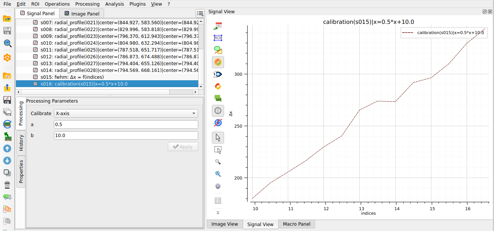
La taille du faisceau étalonné en fonction de la position le long de l’axe de propagation (la position est maintenant en mm).#
Enfin, nous pouvons enregistrer l’espace de travail dans un fichier  . L’espace de travail contient toutes les images et signaux qui ont été chargés ou traités dans DataLab. Il contient également les résultats d’analyse, les paramètres de visualisation (cartes de couleurs, contraste, etc.), les métadonnées et les annotations.
. L’espace de travail contient toutes les images et signaux qui ont été chargés ou traités dans DataLab. Il contient également les résultats d’analyse, les paramètres de visualisation (cartes de couleurs, contraste, etc.), les métadonnées et les annotations.
Si vous souhaitez charger à nouveau l’espace de travail, vous pouvez utiliser « Fichier > Ouvrir un fichier HDF5… » (ou le bouton  dans la barre d’outils) pour charger l’ensemble de l’espace de travail, ou « Fichier > Parcourir un fichier HDF5… » (ou le bouton
dans la barre d’outils) pour charger l’ensemble de l’espace de travail, ou « Fichier > Parcourir un fichier HDF5… » (ou le bouton  dans la barre d’outils) pour charger uniquement une sélection d’ensembles de données de l’espace de travail.
dans la barre d’outils) pour charger uniquement une sélection d’ensembles de données de l’espace de travail.